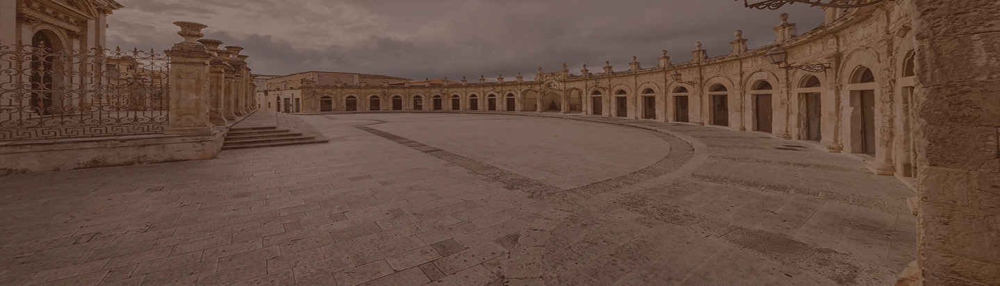

Agorà Sicula

Visita
Un elegante salotto a cielo aperto, dove la maestosità del Duomo e la luce dello Stretto si fondono in un’armonia senza tempo.
Uno splendore barocco nel cuore di Ortigia, incorniciato da maestosi palazzi storici e dal Duomo di Siracusa.
Un maestoso capolavoro architettonico che fonde stili normanni, arabi e gotici.
È la piazza principale, elegante e luminosa, dominata dalla Cattedrale di Santa Maria la Nova.
Il cuore barocco della città, dominata dalla Cattedrale di Sant’Agata e dalla Fontana dell’Elefante.
L’ampio spazio urbano di Ragusa Superiore, dominato dalla Cattedrale di San Giovanni Battista.
Piazza centrale vicino alla stazione ferroviaria, punto di incontro tra residenti e visitatori.
Piccola piazza del centro storico, con edifici storici e atmosfera tranquilla.
Piazza storica e vivace nel cuore della città, legata alla tradizione marinara.